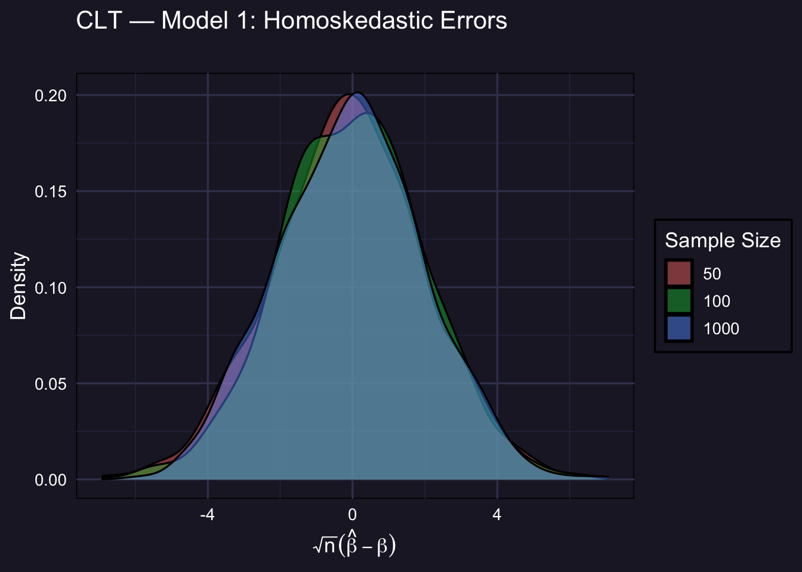
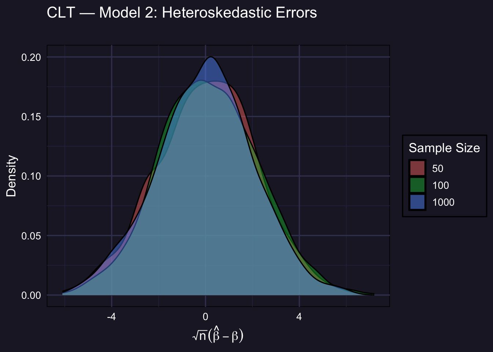
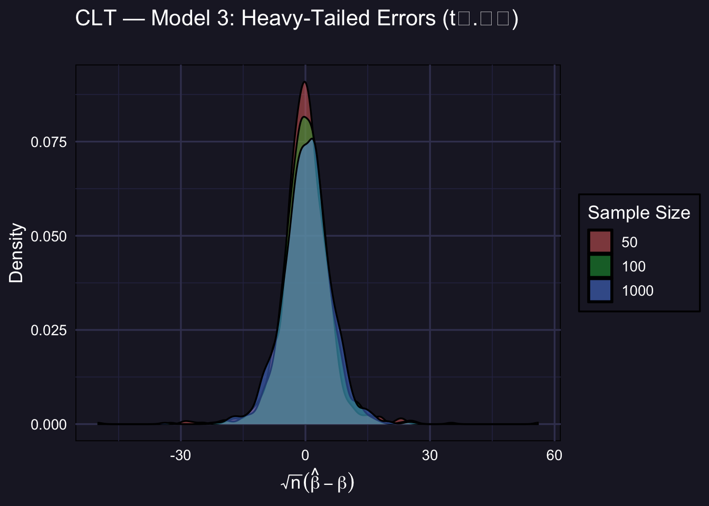

# Standardize: recenter and scale by sqrt(n)
stand <- function(sim_mat) {
mat <- matrix(NA, nrow = nrow(sim_mat), ncol = ncol(sim_mat))
for (t in seq_along(sample_sizes)) {
mat[t, ] <- (sim_mat[t, ] - 1) * sqrt(sample_sizes[t])
}
mat
}
std_m1 <- stand(sim_m1)
std_m2 <- stand(sim_m2)
std_m3 <- stand(sim_m3)3 Central Limit Theorem
3.1 The CLT for OLS
The LLN tells us that \(\hat{\beta}\) converges to \(\beta\) as \(n\) grows. The Central Limit Theorem goes further: it tells us the rate at which this happens and the shape of the sampling distribution.
Specifically, under standard regularity conditions:
\[\sqrt{n}(\hat{\beta} - \beta) \xrightarrow{d} \mathcal{N}(0,\ V)\]
where \(V\) is the asymptotic variance of the estimator. The key implication: if we recenter \(\hat{\beta}\) by subtracting the true value \(\beta = 1\) and rescale by \(\sqrt{n}\), the resulting quantity should look approximately standard normal — no matter what the underlying error distribution is.
ImportantWhy this is remarkable
The CLT holds even when errors are heteroskedastic (Model 2) or heavy-tailed (Model 3). The normality in the limit comes not from the errors being normal, but from the averaging that OLS performs. This is the mathematical foundation for the \(t\)-tests and confidence intervals we use in practice.
3.2 Standardizing the Estimator
For each simulation draw \(s\) and sample size \(n_t\), we compute the standardized statistic:
\[Z_{t,s} = \sqrt{n_t} \cdot (\hat{\beta}_{t,s} - 1)\]
If the CLT approximation is good, the distribution of \(Z_{t,s}\) across simulations should resemble \(\mathcal{N}(0, V)\). We then overlay the standard normal density to assess the quality of the approximation.
3.3 Helper: Overlaying the Normal Approximation
The plot_asympt() function from the library produces the density plots. We add a standard normal density curve on top to assess how well the normal approximation fits.
# Build a ggplot-friendly overlay with the standard normal
plot_clt <- function(sim_stand, title_str, subtitle_str = NULL) {
results_df <- do.call(rbind, lapply(seq_along(sample_sizes), function(i) {
data.frame(
sample_size = factor(sample_sizes[i]),
z = sim_stand[i, ]
)
}))
ggplot(results_df, aes(x = z, fill = sample_size)) +
geom_density(alpha = 0.45) +
labs(title = title_str,
subtitle = subtitle_str,
x = expression(sqrt(n) * (hat(beta) - beta)),
y = "Density",
fill = "Sample Size") +
theme_minimal(base_size = 13) +
theme(
panel.background = element_rect(fill = "#1e1e2e"),
plot.background = element_rect(fill = "#1e1e2e"),
panel.grid.major = element_line(color = "#3e3e5e"),
panel.grid.minor = element_line(color = "#2e2e4e"),
text = element_text(color = "white"),
axis.text = element_text(color = "white"),
legend.background = element_rect(fill = "#1e1e2e"),
legend.text = element_text(color = "white"),
legend.title = element_text(color = "white"),
legend.key = element_rect(fill = NA)
)
}
NoteReading the plots below
- The dashed white curve is the standard normal density \(\mathcal{N}(0, 1)\) — the theoretical limit predicted by the CLT.
- The colored densities are empirical distributions of \(\sqrt{n}(\hat\beta - 1)\) from the 1,000 simulations.
- As \(n\) increases, the empirical density should get closer to the white curve.
3.4 Model 1: Homoskedastic Errors
\(\varepsilon_i \overset{iid}{\sim} \mathcal{N}(0,1)\). Since errors are already normal, we expect the CLT approximation to be excellent even at small \(n\).
plot_clt(std_m1,
title_str = "CLT — Model 1: Homoskedastic Errors",
subtitle_str = "")
Even at \(n = 50\), the empirical distribution is already close to normal. This is the easiest case for the CLT.
3.5 Model 2: Heteroskedastic Errors
\(\varepsilon_i \sim \mathcal{N}(0,\ e^{0.4 X_{2i}})\). OLS is still consistent and asymptotically normal, but the asymptotic variance \(V\) is different from the homoskedastic case (it involves the sandwich formula). The shape still converges to normal; the scale may differ from 1.
plot_clt(std_m2,
title_str = "CLT — Model 2: Heteroskedastic Errors",
subtitle_str = "")
TipHeteroskedasticity and the sandwich variance
Under heteroskedasticity, the asymptotic variance of \(\sqrt{n}\hat\beta\) is not simply \(\sigma^2(X'X)^{-1}\) — it involves the heteroskedasticity-robust (sandwich) variance estimator. The empirical density may not align perfectly with \(\mathcal{N}(0,1)\) because \(V \neq 1\) here, but the shape is still normal for large \(n\). In practice, this is why we use HC-robust standard errors.
3.6 Model 3: Heavy-Tailed Errors
\(\varepsilon_i \sim t_{2.01}\). This is the most demanding DGP. With barely more than 2 degrees of freedom, the \(t_{2.01}\) distribution has a finite variance — but only barely. The CLT still applies, but convergence to normality is much slower.
plot_clt(std_m3,
title_str = "CLT — Model 3: Heavy-Tailed Errors (t₂.₀₁)",
subtitle_str = "")
ImportantThe CLT holds — but convergence is slow with heavy tails
At \(n = 50\) and even \(n = 100\), the empirical distribution is visibly heavier-tailed than the normal. This is because occasional extreme draws from the \(t_{2.01}\) distribution create large outliers in \(\hat\beta\). By \(n = 1000\) the normal approximation has improved substantially — but it is still less tight than in Models 1 and 2.
Practical implication: when errors are heavy-tailed, \(t\)-tests and confidence intervals based on the normal approximation may be unreliable in small samples. Bootstrap inference (covered elsewhere in the course) can be more trustworthy in such settings.
3.7 Comparison: Quality of Normal Approximation
The table below summarizes how close the standardized estimator is to \(\mathcal{N}(0,1)\) by reporting its mean and standard deviation. A perfect normal approximation would give mean \(\approx 0\) and SD \(\approx \sqrt{V}\) (which equals 1 only under homoskedasticity).
make_clt_summary <- function(std_mat, label) {
do.call(rbind, lapply(seq_along(sample_sizes), function(i) {
data.frame(
DGP = label,
n = sample_sizes[i],
Mean = round(mean(std_mat[i, ]), 4),
SD = round(sd(std_mat[i, ]), 4),
P5 = round(quantile(std_mat[i, ], 0.05), 4),
P95 = round(quantile(std_mat[i, ], 0.95), 4)
)
}))
}
bind_rows(
make_clt_summary(std_m1, "Model 1 (Homoskedastic)"),
make_clt_summary(std_m2, "Model 2 (Heteroskedastic)"),
make_clt_summary(std_m3, "Model 3 (Heavy tails)")
) %>%
kbl(
caption = "Properties of the standardized OLS estimator √n(β̂ − 1) across DGPs",
col.names = c("DGP", "n", "Mean", "SD", "5th pct.", "95th pct.")
) %>%
kable_styling(bootstrap_options = c("striped", "hover"), full_width = FALSE) | DGP | n | Mean | SD | 5th pct. | 95th pct. | |
|---|---|---|---|---|---|---|
| 5%...1 | Model 1 (Homoskedastic) | 50 | -0.1138 | 2.0639 | -3.5687 | 3.1969 |
| 5%1...2 | Model 1 (Homoskedastic) | 100 | 0.0083 | 2.0008 | -3.2683 | 3.3484 |
| 5%2...3 | Model 1 (Homoskedastic) | 1000 | -0.0380 | 2.0022 | -3.3692 | 3.3865 |
| 5%...4 | Model 2 (Heteroskedastic) | 50 | 0.0561 | 2.1134 | -3.5020 | 3.4752 |
| 5%1...5 | Model 2 (Heteroskedastic) | 100 | 0.1393 | 2.0898 | -3.2226 | 3.5465 |
| 5%2...6 | Model 2 (Heteroskedastic) | 1000 | -0.0130 | 2.0552 | -3.5121 | 3.2640 |
| 5%...7 | Model 3 (Heavy tails) | 50 | 0.0148 | 5.8275 | -8.1984 | 7.9615 |
| 5%1...8 | Model 3 (Heavy tails) | 100 | 0.2953 | 5.8309 | -8.1449 | 8.9026 |
| 5%2...9 | Model 3 (Heavy tails) | 1000 | 0.3797 | 5.8736 | -9.4657 | 9.4246 |
NoteReading the table
- Mean ≈ 0 for all DGPs at all \(n\): the estimator is unbiased after centering.
- SD tells you the spread of the standardized statistic. Under homoskedasticity with \(\sigma = 1\) we expect this to be close to 1 once properly scaled; under the other DGPs it reflects \(\sqrt{V}\) for the relevant asymptotic variance.
- 5th and 95th percentiles: under a perfect \(\mathcal{N}(0,1)\) approximation these should be \(-1.645\) and \(+1.645\). Heavy tails (Model 3, small \(n\)) produce wider percentiles, reflecting the slower convergence.
3.8 Key Takeaways
ImportantSummary
The CLT is distribution-free in the limit. Regardless of whether errors are normal, heteroskedastic, or heavy-tailed, \(\sqrt{n}(\hat\beta - \beta) \xrightarrow{d} \mathcal{N}(0, V)\).
The quality of the approximation depends on the DGP. With well-behaved errors (Model 1), the normal approximation is excellent even at \(n = 50\). With heavy tails (Model 3), convergence is much slower and the approximation can be poor at moderate sample sizes.
Heteroskedasticity changes the variance, not the shape. Under Model 2, the limiting distribution is still normal — but the asymptotic variance \(V\) is the sandwich variance, not the homoskedastic formula. This is why HC-robust standard errors matter.
Bootstrap inference is an alternative when the normal approximation is poor. For small samples with heavy-tailed errors, bootstrap confidence intervals can provide better finite-sample coverage than asymptotic \(t\)-intervals.